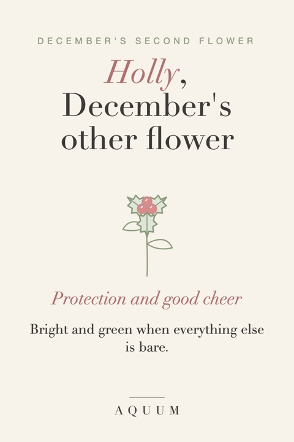
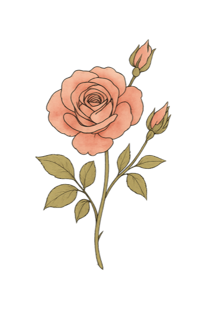

Holly Birth Flower: Meaning, History and December Gift Ideas
2026-10-01
Written by the team behind Aquum, a small birth flower gift shop. How we make money.

Holly is December's second birth flower, next to the paperwhite narcissus. It's the one everyone already knows: glossy, spiky leaves and bright red berries, the plant on a thousand Christmas cards. Its meaning is older than Christmas, though, and it suits a December birthday better than you might think.
What holly means
Holly stands for protection and good cheer. Both meanings come from the same simple fact: holly stays green and bright in the middle of winter, when almost everything else has gone bare.
- Protection. For centuries, people in Britain and northern Europe hung holly over doors and windows to keep bad luck out of the house over winter. The prickly leaves made it look like a guard.
- Good cheer. An evergreen with red berries in December felt like proof that life and color would come back. It became a plant for celebrations and for bringing people together.
- Home and family. Because it was brought indoors to protect the household, holly is also linked with domestic happiness. Some Victorian flower lists add foresight.
Holly says: "I've got you, even in the coldest part of the year."
A little history
Long before Christmas, the Romans gave holly wreaths as gifts during Saturnalia, their midwinter festival. In Celtic and Druid tradition, holly was the evergreen king of the darker half of the year. When Christmas spread through Europe, holly simply came along, and its red berries and pointed leaves were given new Christian symbolism.
So when someone born in December gets holly, they're getting a plant that has meant "winter joy" for about two thousand years.
Holly or paperwhite?
December's two flowers feel very different:
- Holly is festive, bold and protective. It fits someone who loves the holidays, a big family gathering, or being the steady one everyone leans on.
- The paperwhite is quiet, white and fragrant, and means good wishes for what's ahead. It fits someone who'd rather their birthday not feel like Christmas. More in our paperwhite guide.
If the birthday is close to Christmas, the paperwhite usually makes the gift feel more personal. If the person adores the season, holly is a joyful choice.
December birthday gift ideas with holly
- Holly with their name or initial, on something they'll use all year (not only in December): a mug, a tote, a notebook.
- A holly and paperwhite pairing: both December flowers together, which makes the gift clearly about their birth month and not about the holiday.
- A birthday card, not a Christmas card. Our free birthday cards include December, and the gift tags are perfect for a present that arrives in holiday season.
- For a family: if several people in the family were born in winter, a family birth flower bouquet can hold holly next to everyone else's flower.
More ideas, including how to keep a December birthday from being swallowed by the holidays: December birthday gift ideas.
Good to know
Holly berries are toxic to people and pets if eaten. If you give a live holly plant or fresh holly, keep it away from small children, dogs and cats. A drawn or printed holly carries the meaning with none of the risk.
All twelve months and their second flowers are in second birth flowers by month.
Curious about the other plants of the season? Here are Christmas flowers and their meanings, from poinsettia to mistletoe.

Botanical tees at Aquum, one illustrated flower for every month. Free US shipping.
See the tees on Etsy